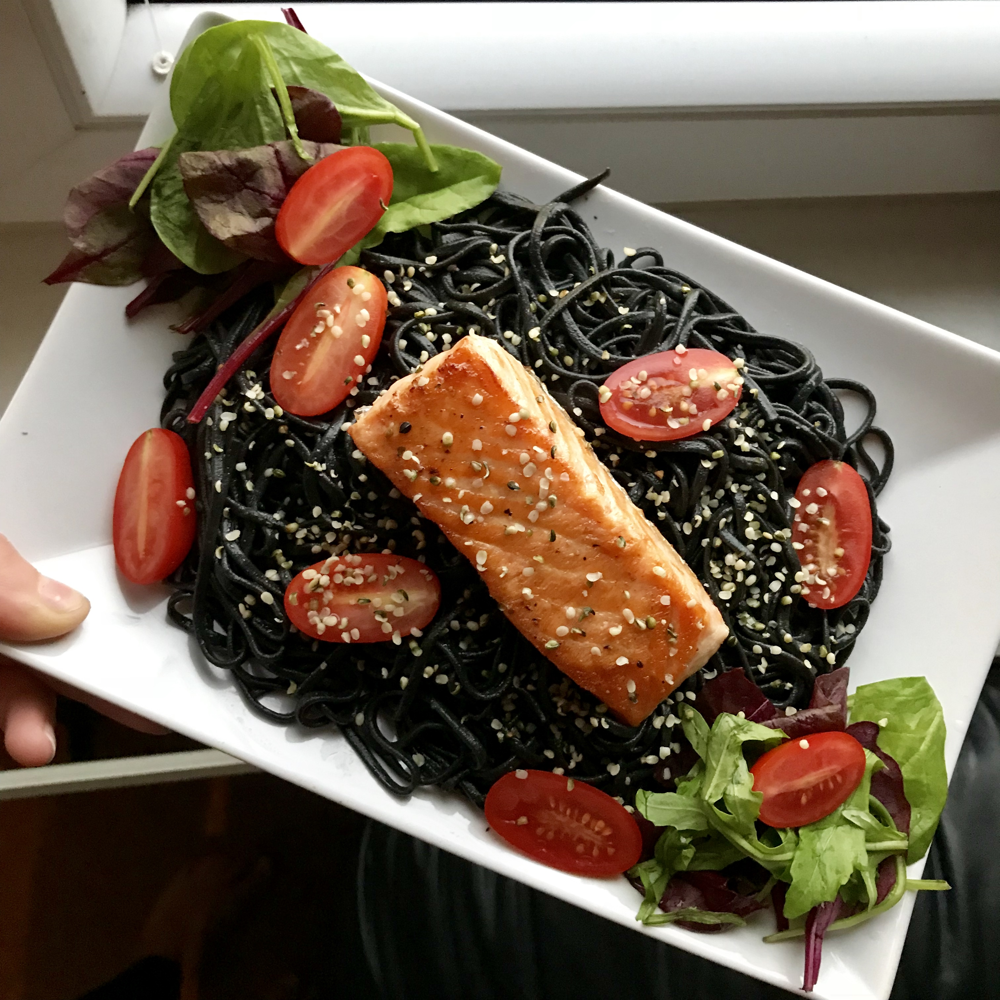

Sépiové špagety
- Ingredience
- 120g lososa
- 100g sépiových špaget
- Čerstvá rajčata
- Sezamová semínka
- Salát
- Sůl
- Pepř
Předehřejte si troubu na 180 stupňů. Až bude trouba rozehřatá, vložte do ní okořeněného lososa a pečte po dobu 18 minut. Do velkého hrnce nalijte 1l vody a přiveďte k varu. Poté do něj vložte těstoviny a nechte vařit 10 minut. Mezitím si připravíme rajčata a salát, kterým dozdobíme talíř. Až je vše hotové, můžete vše jednoduše dát na talíř a servírovat.